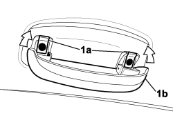

7040H33 GLASSES HOLDER (1) LH OR RH, ON ROOF TRIM - R R
- Path
- Procedures > 70 FITTINGS > 7040 BODY INTERIOR FITTINGS AND TRIM > 7040H ROOF PANEL AND PILLARS LINING > 7040H33 GLASSES HOLDER (1) LH OR RH, ON ROOF TRIM - R R
- Kind
- repair procedure (removal / refitting; the operation number is the code)
- Applies to
- all engines; all production periods
- Interactive page
- https://sloeber94.github.io/elrnDB-fCrm/en/#/194001067
Applies to: all engines; all production periods
 Removing
Removing
 Refitting
Refitting- Open the spectacles holder.
1. Release the covers (1a) and lift them up, undo the bolts underneath and remove the spectacles holder (1b).

Applies to: all engines; all production periods
Refitting
Removing- Place the spectacles holder in position.
- Tighten the bolts and fit the covers.